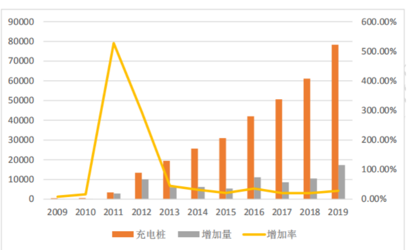
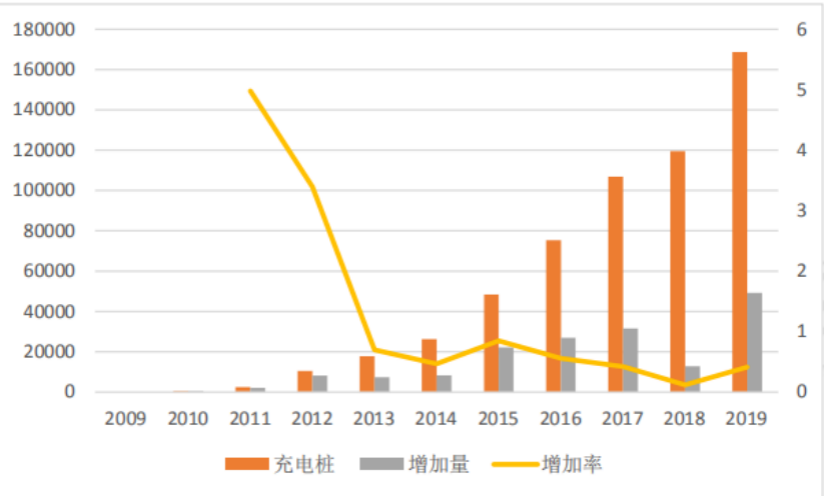
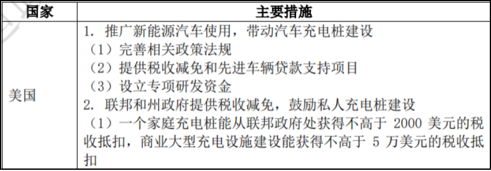
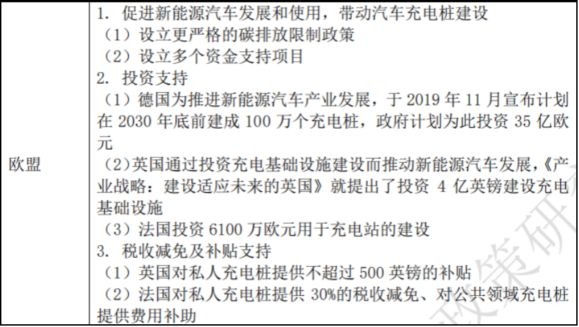

新能源汽车充电桩以公共充电桩为主，其数量最多的经济体分别是中国、欧盟和美国。 截至 2019 年，中国和欧盟分别约有 49.6 万个和 16.9 万个公共充电桩，美国公共充电桩数量超过 7.5 万个。
截至 2019 年 9 月，美国共有 78301 个充电桩， 较 2018 年增加了 17234 个站点，是近 10 年来数量最多的一个年份。 近 5 年来，美国充电桩每年的增加率均高于 20%，处于一个较快的发展建设阶段。美国公共充电桩数量明显高于私人充电桩。
2009-2019美国充电桩数量（个）
在欧盟地区，荷兰、德国、法国和英国较为重视新能源充电桩建设，在 2019 年，荷兰新能源充电桩数量为 50466 个、 德国为 38625 个、法国为 29648 个、英国为 26476 个，共占欧盟地区 充电桩总量的 86.07%。
新能源汽车与新能源汽车充电桩存在相互影响的关系，新能源汽车的发展状况会影响新能源汽车充电桩的建设迫切度，而新能源汽车充电桩的建设状况会影响推动新能源汽车发展的政策效果。因此，各国对新能源汽车发展的推动政策也能有利于新能源汽车充电桩的建设发展。同时，投资建设新能源汽车充电桩也是促进新能源汽车产业发展的一个方式。各国除投资建设公共新能源汽车充电桩，还通过税收减免等方式促进私人充电桩建设。
2009-2019年欧盟充电桩数量（个）
典型国境发展新能源汽车充电桩的促进政策
 